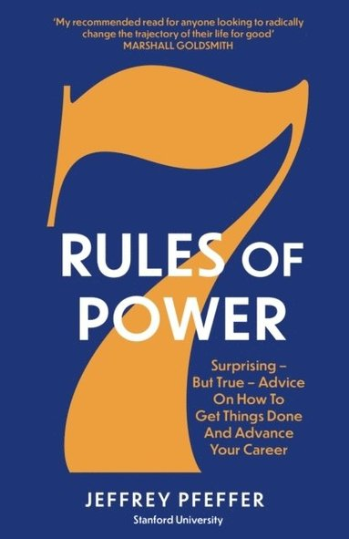

Home
books
Log in
7 Rules of power
7 Rules of power
If you want to "change lives, change organizations, change the world," the Stanford business school’s motto, you need power. Is power the last dirty secret or the secret to success? Both. While power carries some negative connotations, power is a tool that can be used for good or evil. Don’t blame the tool for how some people used it. If fully understood and harnessed effectively, power skills and understanding become the keys to increasing salaries, job satisfaction, career advancement, organizational change, and, happiness.
In 7 Rules of Power, Jeffrey Pfeffer, professor of organizational behavior at the Stanford University Graduate School of Business, provides the insights that have made both his online and on-campus classes incredibly popular—with life-changing results often achieved in 8 or 10 weeks.
What does the nervous system of the lowly lobster have to tell us about standing up straight (with our shoulders back) and about success in life? Why did ancient Egyptians worship the capacity to pay careful attention as the highest of gods? What dreadful paths do people tread when they become resentful, arrogant, and vengeful? Dr. Peterson journeys broadly, discussing discipline, freedom, adventure, and responsibility, distilling the world's wisdom into 12 practical and profound rules for life. 12 Rules for Life shatters the modern commonplaces of science, faith, and human nature while transforming and ennobling the mind and spirit of its listeners.
